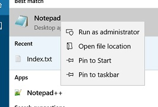

Preparing the system for Ambari setup.
In this article, I will configure the host systems and install HDP using Ambari. First, we will install Ambari and then deploy a datanode using Ambari.
Configure network settings
Once we fire up the VM, the first thing we need to perform is to configure the host adapter settings. For this, login into the VM and then head over to /etc/sysconfig/network-scripts/ [root@localhost ~]# ls -lrth /etc/sysconfig/network-scripts/ifcfg-enp0s* -rw-r--r--. 1 root root 373 Dec 17 09:01 /etc/sysconfig/network-scripts/ifcfg-enp0s8 -rw-r--r--. 1 root root 329 Dec 17 09:02 /etc/sysconfig/network-scripts/ifcfg-enp0s3Change both of the files as shown below. All the IPv6 related parameters needs to be disabled as Hadoop does not fare well in case of IPv6. The changed parameters are shown in green [root@localhost ~]# cat /etc/sysconfig/network-scripts/ifcfg-enp0s3 TYPE=Ethernet BOOTPROTO=dhcp DEFROUTE=yes PEERDNS=yes PEERROUTES=yes IPV4_FAILURE_FATAL=yes IPV6INIT=no IPV6_AUTOCONF=no IPV6_DEFROUTE=no IPV6_PEERDNS=no IPV6_PEERROUTES=no IPV6_FAILURE_FATAL=no IPV6_ADDR_GEN_MODE=stable-privacy NAME=enp0s3 UUID=181bf6f2-b038-43a3-a884-159e51bc7ae2 DEVICE=enp0s3 ONBOOT=yes NM_CONTROLLED=yes [root@localhost ~]# cat /etc/sysconfig/network-scripts/ifcfg-enp0s8 TYPE=Ethernet BOOTPROTO=none DEFROUTE=yes PEERDNS=yes PEERROUTES=yes IPV4_FAILURE_FATAL=yes IPV6INIT=no IPV6_AUTOCONF=no IPV6_DEFROUTE=no IPV6_PEERDNS=no IPV6_PEERROUTES=no IPV6_FAILURE_FATAL=no IPV6_ADDR_GEN_MODE=stable-privacy NAME=enp0s8 UUID=83ca4a9d-1b6c-40b0-ba9c-bb0ea7ba43e3 DEVICE=enp0s8 ONBOOT=yes NM_CONTROLLED=no IPADDR=192.168.141.71 NETMASK=255.255.255.0
Next step is to disable the firewall of the system and then restart the network service in order to bring up the network adapter with the assigned ip address.
[root@localhost ~]# systemctl stop firewalld
[root@localhost ~]# systemctl status firewalld
● firewalld.service - firewalld - dynamic firewall daemon
Loaded: loaded (/usr/lib/systemd/system/firewalld.service; enabled; vendor preset: enabled)
Active: inactive (dead) since Sun 2017-12-17 10:27:46 EST; 6s ago
Docs: man:firewalld(1)
Process: 674 ExecStart=/usr/sbin/firewalld --nofork --nopid $FIREWALLD_ARGS (code=exited, status=0/SUCCESS)
Main PID: 674 (code=exited, status=0/SUCCESS)
Dec 17 03:16:41 localhost.localdomain systemd[1]: Starting firewalld - dynamic firewall daemon...
Dec 17 03:16:44 localhost.localdomain systemd[1]: Started firewalld - dynamic firewall daemon.
Dec 17 09:02:23 localhost.localdomain firewalld[674]: ERROR: UNKNOWN_INTERFACE: 'enp0s8' is not in any zone
Dec 17 10:27:46 localhost.localdomain systemd[1]: Stopping firewalld - dynamic firewall daemon...
Dec 17 10:27:46 localhost.localdomain systemd[1]: Stopped firewalld - dynamic firewall daemon.
[root@localhost ~]# systemctl restart network
Install ntp service and start it. Installing ntp ensures athat there is a sync between the nodes of the cluster and the ambari web interface. [root@localhost ~]# yum install ntp Loaded plugins: fastestmirror, langpacks Loading mirror speeds from cached hostfile * base: ftp.iitm.ac.in ..... ..... [root@localhost ~]# systemctl start ntpd [root@localhost ~]# systemctl status ntpd ● ntpd.service - Network Time Service Loaded: loaded (/usr/lib/systemd/system/ntpd.service; disabled; vendor preset: disabled) Active: active (running) since Sun 2017-12-17 12:17:47 EST; 8s ago Process: 7920 ExecStart=/usr/sbin/ntpd -u ntp:ntp $OPTIONS (code=exited, status=0/SUCCESS) Main PID: 7921 (ntpd) CGroup: /system.slice/ntpd.service └─7921 /usr/sbin/ntpd -u ntp:ntp -g Dec 17 12:17:47 localhost.localdomain ntpd[7921]: Listen normally on 3 enp0s3 10.0.2.15 UDP 123 Dec 17 12:17:47 localhost.localdomain ntpd[7921]: Listen normally on 4 enp0s8 192.168.141.71 UDP 123 Dec 17 12:17:47 localhost.localdomain ntpd[7921]: Listen normally on 5 lo ::1 UDP 123 Dec 17 12:17:47 localhost.localdomain ntpd[7921]: Listen normally on 6 enp0s3 fe80::a00:27ff:fed0:f07f UDP 123 Dec 17 12:17:47 localhost.localdomain ntpd[7921]: Listen normally on 7 enp0s8 fe80::a00:27ff:fe1f:7276 UDP 123 Dec 17 12:17:47 localhost.localdomain ntpd[7921]: Listening on routing socket on fd #24 for interface updates Dec 17 12:17:48 localhost.localdomain ntpd[7921]: 0.0.0.0 c016 06 restart Dec 17 12:17:48 localhost.localdomain ntpd[7921]: 0.0.0.0 c012 02 freq_set kernel 0.000 PPM Dec 17 12:17:48 localhost.localdomain ntpd[7921]: 0.0.0.0 c011 01 freq_not_set Dec 17 12:17:54 localhost.localdomain ntpd[7921]: 0.0.0.0 c614 04 freq_mode
System file configuration
Add the ip address and change the host name in /etc/hosts files [root@localhost ~]# cat /etc/hosts 127.0.0.1 localhost localhost.localdomain localhost4 localhost4.localdomain4 ::1 localhost localhost.localdomain localhost6 localhost6.localdomain6 192.168.141.71 namenodeEdit the network configuration file on every host and set the desired network configuration for each host. [root@namenode ~]# cat /etc/sysconfig/network NETWORKING=yes HOSTNAME=namenode
Disable SELinux and PackageKit and check the umask Value. Open /etc/yum/pluginconf.d/refresh-packagekit.conf with a text editor and make the following change to disable installation host of CentOS. enabled=0
Edit the /etc/selinux/configand change SELINUX=enforcing to SELINUX=disabled. This ensures that SELinux does not turn itself on after you reboot the machine. [root@namenode ~]# cat /etc/selinux/config # This file controls the state of SELinux on the system. # SELINUX= can take one of these three values: # enforcing - SELinux security policy is enforced. # permissive - SELinux prints warnings instead of enforcing. # disabled - No SELinux policy is loaded. SELINUX=disabled # SELINUXTYPE= can take one of three two values: # targeted - Targeted processes are protected, # minimum - Modification of targeted policy. Only selected processes are protected. # mls - Multi Level Security protection. SELINUXTYPE=targeted
We need to verify that the umask value is set to 0022 as Ambari and HDP support umask values of 0022. UMASK (User Mask or User file creation MASK) sets the default permissions or base permissions granted when a new file or folder is created on a Linux machine. A umask value of 022 grants read, write, execute permissions of 755 for new files or folders. [root@namenode ~]# umask 0022 If the umask is not set to this value then the same can be changed in /etc/profile or use the below command. umask 0022
Enable passwordless login
The next thing we need to do is to enable passwordless login for the root user on the localhost. [root@namenode ~]# ssh-keygen -t dsa -P '' -f ~/.ssh/id_dsa Generating public/private dsa key pair. Created directory '/root/.ssh'. Your identification has been saved in /root/.ssh/id_dsa. Your public key has been saved in /root/.ssh/id_dsa.pub. The key fingerprint is: b4:dd:9b:46:26:37:06:1a:08:17:ae:52:e1:f6:61:8d root@namenode The key's randomart image is: +--[ DSA 1024]----+ | o o. | | . = + | | + E + . | | o + o = o | | . . . S o B | | . * + | | + | | . | | | +-----------------+ [root@namenode ~]# cat ~/.ssh/id_dsa.pub > ~/.ssh/authorized_keys [root@namenode ~]# chmod 600 ~/.ssh/authorized_keys [root@namenode ~]# ssh `hostname` The authenticity of host 'namenode (192.168.141.71)' can't be established. ECDSA key fingerprint is 76:88:8b:76:af:d3:41:88:d0:89:aa:62:52:23:cb:98. Are you sure you want to continue connecting (yes/no)? yes Warning: Permanently added 'namenode,192.168.141.71' (ECDSA) to the list of known hosts. Last login: Mon Dec 18 10:05:31 2017 from 192.168.141.1 [root@namenode ~]# exit logout Connection to namenode closed.
Install JAVA
Install the latest version of java using the following commands: [root@namenode ~]# yum install java [root@namenode ~]# java -version openjdk version "1.8.0_151" OpenJDK Runtime Environment (build 1.8.0_151-b12) OpenJDK 64-Bit Server VM (build 25.151-b12, mixed mode)Install Ambari
Next, to install ambari, download the latest ambari repo and keep it in the /etc/yum.repos.d/ path [root@namenode ~]# wget -nv http://public-repo-1.hortonworks.com/ambari/centos7/2.x/updates/2.6.0.0/ambari.repo -O /etc/yum.repos.d/ambari.repo [root@namenode ~]# yum repolist Loaded plugins: fastestmirror, langpacks ambari-2.6.0.0 | 2.9 kB 00:00:00 base | 3.6 kB 00:00:00 extras | 3.4 kB 00:00:00 updates | 3.4 kB 00:00:00 ambari-2.6.0.0/primary_db | 8.6 kB 00:00:00 Loading mirror speeds from cached hostfile * base: ftp.iitm.ac.in * extras: ftp.iitm.ac.in * updates: ftp.iitm.ac.in repo id repo name status ambari-2.6.0.0 ambari Version - ambari-2.6.0.0 12 base/7/x86_64 CentOS-7 - Base 9,591 extras/7/x86_64 CentOS-7 - Extras 327 updates/7/x86_64 CentOS-7 - Updates 1,540 repolist: 11,470Next, Install ambari server and ambari agent
[root@namenode ~]# yum install ambari-server
Loaded plugins: fastestmirror, langpacks
Loading mirror speeds from cached hostfile
* base: ftp.iitm.ac.in
* extras: ftp.iitm.ac.in
* updates: ftp.iitm.ac.in
Resolving Dependencies
--> Running transaction check
---> Package ambari-server.x86_64 0:2.6.0.0-267 will be installed
--> Finished Dependency Resolution
Dependencies Resolved
=============================================================================
Package Arch Version Repository Size
=============================================================================
Installing:
ambari-server x86_64 2.6.0.0-267 ambari-2.6.0.0 712 M
Transaction Summary
=============================================================================
Install 1 Package
Total download size: 712 M
Installed size: 776 M
Is this ok [y/d/N]: y
Downloading packages:
warning: /var/cache/yum/x86_64/7/ambari-2.6.0.0/packages/ambari-server-2.6.0.0-267.x86_64.rpm: Header V4 RSA/SHA1 Signature, key ID 07513cad: NOKEY00 ETA
Public key for ambari-server-2.6.0.0-267.x86_64.rpm is not installed
ambari-server-2.6.0.0-267.x86_64.rpm | 712 MB 00:19:03
Retrieving key from http://public-repo-1.hortonworks.com/ambari/centos7/2.x/updates/2.6.0.0/RPM-GPG-KEY/RPM-GPG-KEY-Jenkins
Importing GPG key 0x07513CAD:
Userid : "Jenkins (HDP Builds)
Database Configuration
For using Ambari and other hadoop ecosystem components, we need a database for storing their data. Default database for Ambari is postgreSQL, but mySQL is also widely used. Here, I will show how to install and use the postgreSQL as well as mySQL.
Install and start mySQL
Use the following commands to download the mysql repo and install the mysql-server. wget http://repo.mysql.com/mysql-community-release-el7-5.noarch.rpm sudo rpm -ivh mysql-community-release-el7-5.noarch.rpm sudo yum install mysql-server yum install mysql-connector-java sudo systemctl start mysqld Next, verify that mysql is running [root@namenode ~]# systemctl status mysqld ● mysqld.service - MySQL Community Server Loaded: loaded (/usr/lib/systemd/system/mysqld.service; enabled; vendor preset: disabled) Active: active (running) since Mon 2017-12-25 17:49:45 IST; 1min 49s ago Process: 12103 ExecStartPost=/usr/bin/mysql-systemd-start post (code=exited, status=0/SUCCESS) Process: 12043 ExecStartPre=/usr/bin/mysql-systemd-start pre (code=exited, status=0/SUCCESS) Main PID: 12102 (mysqld_safe) CGroup: /system.slice/mysqld.service ├─12102 /bin/sh /usr/bin/mysqld_safe --basedir=/usr └─12268 /usr/sbin/mysqld --basedir=/usr --datadir=/var/lib/mysql --plugin-dir=/usr/lib64/mysql/plugin --log-error=/var/log/mysqld.log --pid-... Dec 25 17:49:44 namenode mysql-systemd-start[12043]: Support MySQL by buying support/licenses at http://shop.mysql.com Dec 25 17:49:44 namenode mysql-systemd-start[12043]: Note: new default config file not created. Dec 25 17:49:44 namenode mysql-systemd-start[12043]: Please make sure your config file is current Dec 25 17:49:44 namenode mysql-systemd-start[12043]: WARNING: Default config file /etc/my.cnf exists on the system Dec 25 17:49:44 namenode mysql-systemd-start[12043]: This file will be read by default by the MySQL server Dec 25 17:49:44 namenode mysql-systemd-start[12043]: If you do not want to use this, either remove it, or use the Dec 25 17:49:44 namenode mysql-systemd-start[12043]: --defaults-file argument to mysqld_safe when starting the server Dec 25 17:49:44 namenode mysqld_safe[12102]: 171225 17:49:44 mysqld_safe Logging to '/var/log/mysqld.log'. Dec 25 17:49:44 namenode mysqld_safe[12102]: 171225 17:49:44 mysqld_safe Starting mysqld daemon with databases from /var/lib/mysql Dec 25 17:49:45 namenode systemd[1]: Started MySQL Community Server.
Install and start postgreSQL
If you had selected postgresql to be installed as the additional component while installing CentOS 7 , you need to initialise the database. [root@namenode ~]# postgresql-setup initdb Initializing database ... OK If not, then download postgresql in the same way as we did for ambari. Once it is installed, start the service. [root@namenode ~]# systemctl start postgresql.service [root@namenode ~]# systemctl status postgresql.service ● postgresql.service - PostgreSQL database server Loaded: loaded (/usr/lib/systemd/system/postgresql.service; enabled; vendor preset: disabled) Active: active (running) since Mon 2017-12-18 15:07:16 EST; 5s ago Process: 4757 ExecStart=/usr/bin/pg_ctl start -D ${PGDATA} -s -o -p ${PGPORT} -w -t 300 (code=exited, status=0/SUCCESS) Process: 4752 ExecStartPre=/usr/bin/postgresql-check-db-dir ${PGDATA} (code=exited, status=0/SUCCESS) Main PID: 4761 (postgres) CGroup: /system.slice/postgresql.service ├─4761 /usr/bin/postgres -D /var/lib/pgsql/data -p 5432 ├─4762 postgres: logger process ├─4764 postgres: checkpointer process ├─4765 postgres: writer process ├─4766 postgres: wal writer process ├─4767 postgres: autovacuum launcher process └─4768 postgres: stats collector process Dec 18 15:07:14 namenode systemd[1]: Starting PostgreSQL database server... Dec 18 15:07:16 namenode systemd[1]: Started PostgreSQL database server.Run ambari setup
Now, run the ambari-server setup using the default options. If you want to use mySQL, then use the corresponding options. [root@namenode ~]# ambari-server setup Using python /usr/bin/python Setup ambari-server Checking SELinux... SELinux status is 'disabled' Customize user account for ambari-server daemon [y/n] (n)? Adjusting ambari-server permissions and ownership... Checking firewall status... WARNING: iptables is running. Confirm the necessary Ambari ports are accessible. Refer to the Ambari documentation for more details on ports. OK to continue [y/n] (y)? Checking JDK... [1] Oracle JDK 1.8 + Java Cryptography Extension (JCE) Policy Files 8 [2] Oracle JDK 1.7 + Java Cryptography Extension (JCE) Policy Files 7 [3] Custom JDK ============================================================================== Enter choice (1): 1 To download the Oracle JDK and the Java Cryptography Extension (JCE) Policy Files you must accept the license terms found at http://www.oracle.com/technetwork/java/javase/terms/license/index.html and not accepting will cancel the Ambari Server setup and you must install the JDK and JCE files manually. Do you accept the Oracle Binary Code License Agreement [y/n] (y)? Downloading JDK from http://public-repo-1.hortonworks.com/ARTIFACTS/jdk-8u112-linux-x64.tar.gz to /var/lib/ambari-server/resources/jdk-8u112-linux-x64.tar.gz jdk-8u112-linux-x64.tar.gz... 100% (174.7 MB of 174.7 MB) Successfully downloaded JDK distribution to /var/lib/ambari-server/resources/jdk-8u112-linux-x64.tar.gz Installing JDK to /usr/jdk64/ Successfully installed JDK to /usr/jdk64/ Downloading JCE Policy archive from http://public-repo-1.hortonworks.com/ARTIFACTS/jce_policy-8.zip to /var/lib/ambari-server/resources/jce_policy-8.zip Successfully downloaded JCE Policy archive to /var/lib/ambari-server/resources/jce_policy-8.zip Installing JCE policy... Completing setup... Configuring database... Enter advanced database configuration [y/n] (n)? y Configuring database... ============================================================================== Choose one of the following options: [1] - PostgreSQL (Embedded) [2] - Oracle [3] - MySQL / MariaDB [4] - PostgreSQL [5] - Microsoft SQL Server (Tech Preview) [6] - SQL Anywhere [7] - BDB ============================================================================== Enter choice (1): 1 Database admin user (postgres): Database name (ambari): Postgres schema (ambari): Username (ambari): Enter Database Password (bigdata): Default properties detected. Using built-in database. Configuring ambari database... Checking PostgreSQL... Configuring local database... Configuring PostgreSQL... Restarting PostgreSQL Creating schema and user... done. Creating tables... done. Extracting system views... ambari-admin-2.6.0.0.267.jar ........... Adjusting ambari-server permissions and ownership... Ambari Server 'setup' completed successfully. Install the jdbc driver for postgreSQL and run ambari-setup. [root@namenode ~]# yum install postgresql-jdbc [root@namenode ~]# ambari-server setup --jdbc-db=postgres --jdbc-driver=/usr/share/java/postgresql-jdbc.jar Using python /usr/bin/python Setup ambari-server Copying /usr/share/java/postgresql-jdbc.jar to /var/lib/ambari-server/resources If you are updating existing jdbc driver jar for postgres with postgresql-jdbc.jar. Please remove the old driver jar, from all hosts. Restarting services that need the driver, will automatically copy the new jar to the hosts. JDBC driver was successfully initialized. Ambari Server 'setup' completed successfully. [root@namenode ~]# ambari-server start Using python /usr/bin/python Starting ambari-server Ambari Server running with administrator privileges. Organizing resource files at /var/lib/ambari-server/resources... Ambari database consistency check started... Server PID at: /var/run/ambari-server/ambari-server.pid Server out at: /var/log/ambari-server/ambari-server.out Server log at: /var/log/ambari-server/ambari-server.log Waiting for server start.......................................... Server started listening on 8080 DB configs consistency check: no errors and warnings were found. Ambari Server 'start' completed successfully. [root@namenode ~]# ambari-agent start Verifying Python version compatibility... Using python /usr/bin/python Checking for previously running Ambari Agent... Checking ambari-common dir... Starting ambari-agent Verifying ambari-agent process status... Ambari Agent successfully started Agent PID at: /run/ambari-agent/ambari-agent.pid Agent out at: /var/log/ambari-agent/ambari-agent.out Agent log at: /var/log/ambari-agent/ambari-agent.log
Windows host file
To open ambari in browser, we need to add the server ip to the hosts file of windows system. To achieve this, open notepad as an administrator and then open the host file (path %SystemRoot%\System32\drivers\etc\hosts).  Add the following entry to the file: 192.168.141.71 namenode
Login into Ambari
open http://192.168.141.71:8080 in a browser and login into Ambari. Use admin/admin as the username and passwordNow , we are ready to setup our hadoop cluster using Ambari.